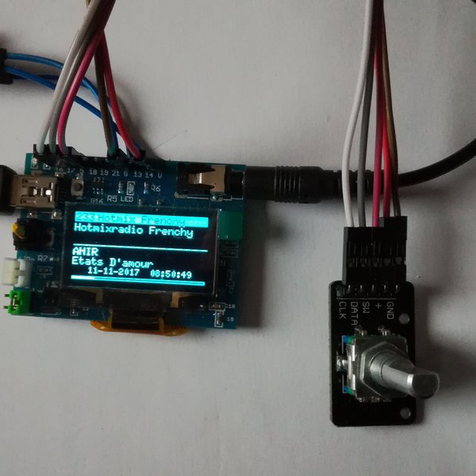
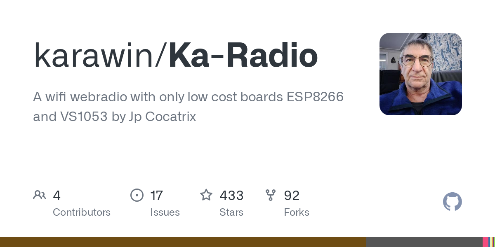

ESP, IoT +Arduino WiFi Интернет-радио приемник с управлением энкодером и OLED-дисплеем
BlackBug Engineering
★★✩✩✩✩✩
15 Май 2020
Слушать радио в Интернет давно стало привычным делом. Вот и у меня есть несколько любимых радиостанций, которые я включаю на компьютере. Среди них есть и эфирные и работающие только в Интернет. Хочу вам рассказать, как сделать удобное устройство для прослушивания Интернет радиостанций без использования компьютера. Один из самых известных проектов такого устройства - это Ka-Radio. Именно этот проект с некоторыми доработками в виде управления при помощи энкодера я и реализую.
Видео сборки:
Для сборки потребуется:
ИНСТРУКЦИЯ:

 Реакции:Verholaz и Roman_154
Реакции:Verholaz и Roman_154kalobyte
★★★✩✩✩✩
15 Май 2020
просто оставлю это здесь
ESP32-LyraT V4.3 Getting Started Guide — Audio Development Framework documentation

folks
✩✩✩✩✩✩✩
1 Июн 2020
А к чему этот гемор с дополнительной ардуино для управления дисплеем ? Есть же карадио на ESP-32 , которое замечательно работает .
Реакции:Verholaz
BlackBug Engineering
★★✩✩✩✩✩
1 Июн 2020
А к чему этот гемор с дополнительной ардуино для управления дисплеем ? Есть же карадио на ESP-32 , которое замечательно работает .
Все просто - в наличии был только ESP8266 и очень загорелся идеей управлять энкодером, а экран просто под руку подвернулся, но теперь оценил - все время смотрю исполнителя и название композиции Короче, мне прям оч. по душе пришелся девайс, каждый день теперь слушаю. Ноут можно и перегружать и выключать, а любимое радио работает! Сначала еще загорелся идеей веб-интерфейс подправить на свой вкус, но сейчас понял, что я им совсем не пользуюсь.

Roman_S
★★✩✩✩✩✩
4 Июн 2020
здорово конечно, но есть же полноценный ka-radio на esp8266 c энкодером )
BlackBug Engineering
★★✩✩✩✩✩
5 Июн 2020
здорово конечно, но есть же полноценный ka-radio на esp8266 c энкодером )
Давайте ссылку в ленту, я с удовольствием ознакомлюсь
Roman_S
★★✩✩✩✩✩
5 Июн 2020
вот же

WiFi Webradio on ESP8266 or ESP32
Control with any browsers (ie edge, chrome mozilla etc...). or with an external hardware panel or with the uart interface or with telnet. Memory for 255 stations OTA (On the Air) upgrade, Read direct mp3 or ogg or WMA streams or playlist .pls .m3u, asx and .xspf Read up to a 320 kb/s stream...
hackaday.io

A wifi webradio with only low cost boards ESP8266 and VS1053 by Jp Cocatrix - karawin/Ka-Radio
github.com
Roman_S
★★✩✩✩✩✩
21 Авг 2021
собственно тоже вот запилил
ESP, IoT - ESPboy для игр и экспериментов с IoT
Запилил очередную статью на хабр про ESPboy девайс
 community.alexgyver.ru
community.alexgyver.ru
Реакции:KeyMVerholaz
★✩✩✩✩✩✩
20 Мар 2022
Добрый вечер.
Вот здесь ссылка на рабочий вариант радио на ESP8266+IR+TDA1387+OLED0.96+PAM8403+4 кнопки управления. Повторил в коробочке с алиэкспресс наружным размером 25×60×100мм без PAM8403.
Вложения

97.3 KBПросмотры: 32

123.6 KBПросмотры: 28

147 KBПросмотры: 23
Изменено: 21 Мар 2022

Leon111_09
★★★✩✩✩✩
26 Мар 2022
Вот здесь ссылка на рабочий вариант радио
Это платное радио.Там код активации надо покупать. Проще взять с 4пда-там очень много вариантов прошивки. Даже есть на базе ESP-01.
Verholaz
★✩✩✩✩✩✩
27 Мар 2022
@Leon111_09,
У меня работает бесплатно. 10 станций, выбираются по желанию. Прошивка
ESPmini_DAC_39.zip прошивка bin версия 39 для приемников с внешним ЦАП. Моё субъективное мнение это один из лучших вариантов на ESP8266, да и повторяемость у этого варианта хорошая. За совет про 4PDA спасибо, я там частый гость под ником Verholazila. Хорошего дня.
Leon111_09
★★★✩✩✩✩
27 Мар 2022
@Verholaz, Раздел "магазин" на том сайте,что вы дали ссылку:
Я прошил классическим проектом, и все,что в вашей прошивке у меня работает без всяких ключей активации.Там большой выбор железа, а не жесткая привязка(как в вашем проекте). Взял прошивку и инструкции по настройке и сборке тут: Ka-Radio32
Кстати,обновления приходят по воздуху:там версия 2.2, но уже февральская обнова пришла v2.3.
Изменено: 27 Мар 2022
Verholaz
★✩✩✩✩✩✩
27 Мар 2022
@Leon111_09,
Это всё хорошо. Только причём здесь KaRadio32?
Leon111_09
★★★✩✩✩✩
27 Мар 2022
Только причём здесь KaRadio32?
Этот проект с открытым исходным кодом,под большое количество железа (даже под ESP-01),с большим набором функционала (включая и управление как через браузер,так и с пульта),и заметьте-совершенно бесплатен(без всяких "ключей активации").
Verholaz
★✩✩✩✩✩✩
27 Мар 2022
@Verholaz, Раздел "магазин" на том сайте,что вы дали ссылку:
Посмотреть вложение 35423
В моей ссылке этого нет. В моей ссылке вариант с ESP8266. Вы сделали скриншот из платной версии на ESP32. Читайте вниматильнее содержание.
Leon111_09
★★★✩✩✩✩
27 Мар 2022
В моей ссылке этого нет.
Это скриншот с сайта,на который вы дали ссылку.Там в шапке есть раздел "магазин". Пролистайте в самый низ и увидите ценник на ключ.Там прошивка платная: без активации работает с урезанным функционалом.
Verholaz
★✩✩✩✩✩✩
28 Мар 2022
Это скриншот с сайта,на который вы дали ссылку.Там в шапке есть раздел "магазин". Пролистайте в самый низ и увидите ценник на ключ.Там прошивка платная: без активации работает с урезанным функционалом.
Посмотреть вложение 35456
Ссылку я давал только на "Интернет радиоприемник ESPmini DAC". У меня уже работает 3 недели и кнопки, и пульт, и голосовое сопровождение, и web интерфейс. Работает очень хорошо для ESP8266. А то, что вы накопали про ключ за 70 рублей, я думаю это касается варианта 2 на ESP32. Да и 70 рублей это можно сказать даром. Единственное ограничение это громкость звука регулируется от 0 до 120, но этой регулировки вполне хватает. На этом хочу закончить дискуссию и откланяться.
P.S. Пока писал слушал это радио, а конкретно станцию "Радиола Екатеринбург".
Хорошего дня.
Leon111_09
★★★✩✩✩✩
28 Мар 2022
что вы накопали
Я ничего не копал-все в свободном доступе. .
Хорошего дня.
И вам удачи
Иван Себунин
✩✩✩✩✩✩✩
5 Ноя 2022
@BlackBug Engineering, Собираю по вашему варианту проект. И что-то идет не так: программа для флеш загрузки 3.9.3 - вроде как все подгружает, но напротив строчки где указан путь файла окошко остается незаполнено. Пишет FINISH и на этом все - ничего не происходит. Никакой wi-fi сети не появляется.... Не понимаю куда дальше двигаться. Как залезать в веб интерфейс ESPшки.
{kind=link}